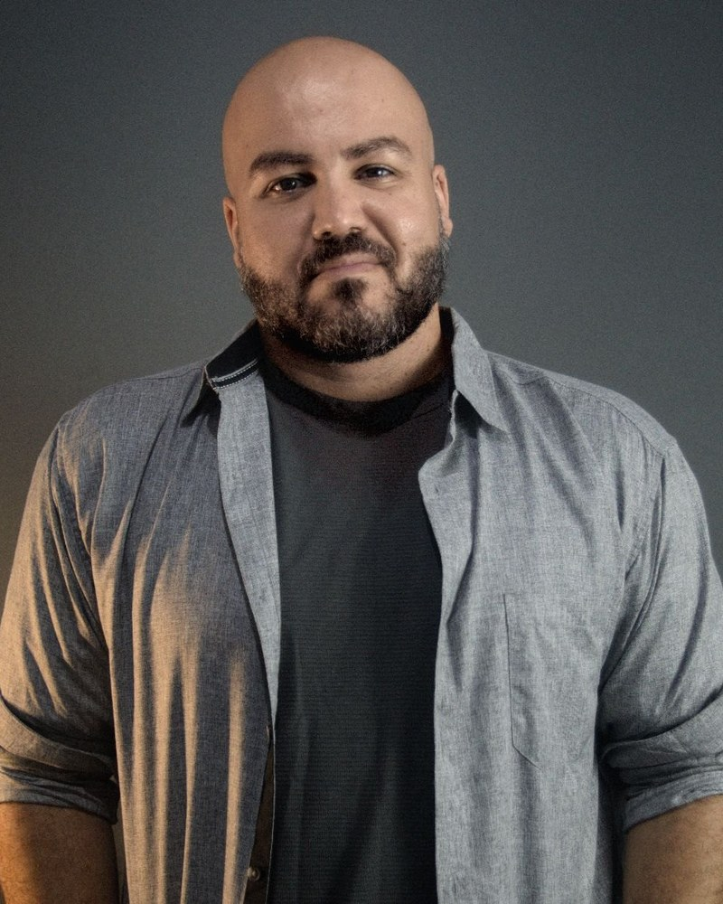
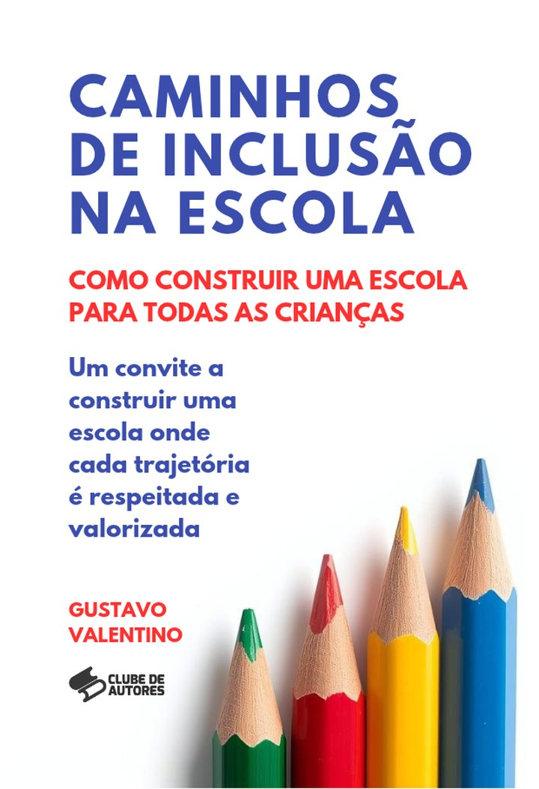
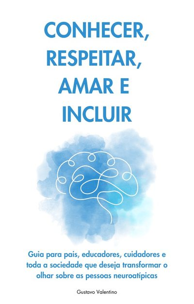

Educação
Reflexões, experiências e materiais para quem ensina e para quem apoia a aprendizagem em casa.
Gustavo Valentino | Educação e Comunicação
Comunicação a serviço da aprendizagem: projetos, reflexões e materiais sobre educação, tecnologia e inclusão — para quem ensina e para quem acompanha de perto quem aprende.

Comecei pela comunicação e me apaixonei pela educação. Hoje, como jornalista, publicitário e professor, uno as duas áreas: vídeo, áudio, design, redes sociais e outras tecnologias como ferramentas pedagógicas.
Dentro e fora da sala de aula, sempre a serviço do professor e do estudante — nunca no lugar deles.
Quatro frentes que se conversam o tempo todo.
Reflexões, experiências e materiais para quem ensina e para quem apoia a aprendizagem em casa.
Jornalismo, publicidade e design aplicados à educação: explicar, mostrar e contar de um jeito que as pessoas entendam.
Vídeo, áudio, redes e outros recursos digitais como ferramentas pedagógicas, com rigor e acessibilidade.
Um olhar que atravessa tudo o que faço: uma escola em que cada trajetória é respeitada e valorizada.

Livro
Como construir uma escola para todas as crianças.
Um material em 18 capítulos para quem vive a inclusão escolar no dia a dia: do direito à educação inclusiva ao PEI, do profissional de apoio ao AEE, das adaptações pedagógicas à parceria entre família e escola.
Dois e-books em PDF, gratuitos, com download direto e sem cadastro.
Os riscos reais que cercam crianças e adolescentes
Orientação para pais e educadores sobre os riscos do ambiente digital, das redes sociais à inteligência artificial, com foco em prevenção, diálogo em família e um plano prático de proteção.

Um guia sobre neurodiversidade para pais, educadores e cuidadores
Introdução à neurodiversidade (TEA, TDAH, TOC e outras condições), com abordagem humana e prática: diagnóstico precoce, direitos, redes de apoio e leituras complementares.
A inclusão acontece na escola e em casa. Por isso, o que publico aqui busca servir aos dois lados.
Professores, gestores e equipes de apoio: caminhos práticos, linguagem simples e referências para planejar e adaptar.
Informação clara sobre direitos, sobre a parceria com a escola e sobre o dia a dia da inclusão, sem jargão.
Mais de perto
O lado mais pessoal do meu trabalho, para quem quiser conhecer.
O meu tio, o meu filho e o que a inclusão mudou na minha vida e na minha aula.
Fotografia autoral em três coleções: São Paulo, Rio de Janeiro e as pequenas formas de vida.
Dez cartas de um pai ao filho, da espera até hoje.
Vídeos sobre educação e comunicação ficam no canal do YouTube. Para começar, o trailer do canal, em 52 segundos.
Mesmo endereço em todas elas: @vejaogustavo.